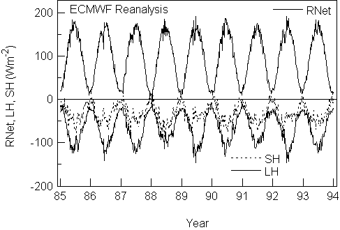
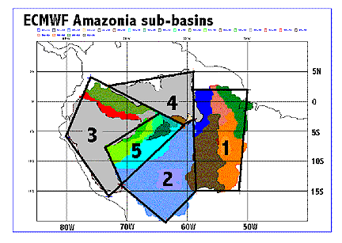

ABSTRACT
This project addresses a key objective of LBA, namely to improve the models
of the surface exchange between the tropical forest of Amazonia and the
atmosphere using the LBA meteorological, surface flux and biophysical data
by analyzing LBA data, and by developing improved parameterizations of
the surface energy balance and boundary layer over Amazonia in global weather
forecast models and in the USP forecast model.
The key scientific objective is "Improved parameterization of the surface
energy balance and boundary layer over Amazonia in weather forecast models."
The scientific approach involves data analysis, tailored to identifying
and understanding the physical processes, and also to the development of
process models suitable for incorporation in forecast models. The land
surface processes in operational forecast models can readily be evaluated
against field data, because of their immediate impact on the model forecast
errors for temperature and humidity near the surface, as well as by comparing
the surface energy and water fluxes including precipitation on diurnal
to seasonal time-scales. At the same time their global impact on the model
systematic errors near the surface, in the boundary layer and in the troposphere
can quickly be seen in monthly forecasts, which show the climate drift
of a model against observations.
This project will continue the improvement of weather forecast models
at ECMWF, which has been progressing for about eight years using
data from FIFE, BOREAS and GCIP. (A complete list of references dealing
with this work is available from the PI on request.) The PI is also
interacting with Prof. P.L. Silva Dias on the development of the forecast model
system at USP, which uses the RAMS model. Conceptual results and parametric
models can then be transferred from forecast models to climate models and
more complex earth system models.
Several specific steps are involved. One is the analysis of LBA surface
hydrometeorological data and sounding data from the dry and rainy season
observing periods, as well as the continuous surface data sets. We are
currently analyzing the data from the Rondonia LBA-WETAMC/TRMM field
phase. Betts et al. (2001a) uses the wind regimes identified by other LBA
researchers to explore the surface diurnal cycle and the coupling to the
atmosphere using the data collected at the Rondonia pasture site. Betts et
al. (2001b) deals with the transport of ozone by convective downdrafts at night
at this site. Silva Dias et al. (2001) is a case study of a convective
band that developed over Rondonia during the WETAMC. The second step is
the development of improved land-surface models for Amazonia using data from LBA.
A new tiled land-surface model has been implemented at ECMWF in the operational
model and in the reanalysis [ERA40], and we are exploring its characteristics
over Amazonia. Betts and Jakob [2001] compares the diurnal cycle of
precipitation and surface thermodynamics in the ECMWF model with that observed
over Rondonia. We found that precipitation starts about two hours after
sunrise in the model, several hours earlier than observed, because the model
does not simulate well the morning growth of the non-precipitating convective
boundary layer. For LBA, a third
tool we shall use is studies of the basin-scale hydrology of the ECMWF
model, which has been very successful in interpreting the performance of
the model hydrology for the Mississippi sub-basins of GCIP. The ability to
do basin integrals on a Gaussian grid derived from the full model at hourly time
resolution is a unique capability of the ECMWF analysis system. We plan to
do this using the ECMWF reanalysis.
Figure 1 from Betts et al. (1998b) shows the nine annual cycles
of the energy balance for the Arkansas-Red River basin, plotted from 5-day
average data. The upper curve (solid) is net radiation (RNet) with
fluctuations on the 5-day time scale associated with clouds and precipitation
in the model. RNet is small in mid-winter. The lower curves are
the model latent (LH: light solid) and sensible (SH: dotted)
heat fluxes. Here we see the most interannual variability, which is related
to rainfall and soil water in summer. In 1988, the driest summer, LH
is low and SH is large relative to wetter summers, such as 1986,
1989 or 1992. The LH flux is larger than the SH flux at all
times and it is upward even in winter. It is probable that the winter evaporation
is too high, because of the lack of a seasonal vegetation cycle in the
model.

Figure 1. Average energy balance for the Arkansas-Red
River basin from the ECMWF reanalysis
For LBA, we will add to the ECMWF T-319 operational model diagnostics,
averages for five of the Amazonia sub-basins, as shown in Figure 2,
so we will have basin energy and water balances on an hourly time-scale
for LBA, with the then-current operational model in 1999-2001. Many smaller
basins are shown in this figure (basins courtesy of Tom Dunne and Brad
Newton), but we will onlyanalyze the major sub-basins represented by the
quadrilaterals shown. Precipitation and basin streamflow data will be used
for evaluation of the model on this scale. The eastern basin, labeled 1,
is largely ungauged. Basin 2 is the Madeira, basin 3 (which includes a
smaller sub-basin 5, representing primarily the Purus, Jurua and Jutai)
includes also the Amazonas, Ica and Japura basins. Basin 4 is primarily
the Negro.

Figure 2. Amazonia sub-basins to be archived at ECMWF for LBA.
References.
Beljaars, A.C.M., P. Viterbo, M.J. Miller and A.K. Betts, 1996: The
anomalous rainfall over the US during July 1993: sensitivity to land surface
parameterization. Mon. Wea. Rev., 124, 362-383.
Betts, A.K., J.H. Ball, and A.C.M. Beljaars, 1993: Comparison between
the land surface response of the European Centre model and the FIFE-1987
data. Quart. J. Roy. Meteor. Soc. , 119, 975-1001.
Betts, A.K., S-Y. Hong and H-L. Pan, 1996a: Comparison of NCEP/NCAR
Reanalysis with 1987 FIFE data. Mon. Wea. Rev., 124, 1480-1498.
Betts, A. K., J.H. Ball, Beljaars, A.C.M., M.J. Miller and P. Viterbo,
1996b: The land-surface-atmosphere interaction: a review based on observational
and global modeling perspectives. J. Geophys. Res. 101, 7209-7225.
Betts, A.K., F. Chen,, K. Mitchell and Z. Janji, 1997: Assessment of
land-surface and boundary layer models in 2 operational versions of the
Eta Model using FIFE data. Mon. Wea. Rev., 125, 2896-2915.
Betts A. K., P. Viterbo and A.C.M. Beljaars, 1998a: Comparison of the
ECMWF reanalysis with the 1987 FIFE data. Mon. Wea. Rev., 126,
186-198.
Betts, A. K., P. Viterbo and E. Wood, 1998b: Surface Energy and water
balance for the Arkansas-Red river basin from the ECMWF reanalysis.
J. Clim., (in press)
Betts A. K., P. Viterbo, A.C.M. Beljaars, H-L. Pan, S-Y. Hong, M. L.
Goulden and S.C. Wofsy, 1998c: Evaluation of the land-surface interaction
in the ECMWF and NCEP/NCAR reanalyses over grassland (FIFE) and boreal
forest (BOREAS). J. Geophys. Res. (in press).
Betts, A.K., J. Fuentes, M. Garstang, and J.H. Ball M.,
2001a. Surface diurnal cycle and Boundary Layer structure over Rondonia
during the rainy season. JGR-Atmospheres (in press).
Betts,
A.K., L.V. Gatti, A.M. Cordova, M.A.F. Silva Dias, and J. Fuentes, 2001b.
Transport of ozone to the surface by convective downdrafts at night. JGR-Atmospheres
(in press).
Betts, A.K., and C. Jakob, 2001.
Evaluation of the diurnal cycle of precipitation, surface thermodynamics and
surface fluxes in the ECMWF model using LBA data. JGR-Atmospheres
(in press).
Silva Dias, M.A.F., W. Petersen, P.L. Silva
Dias, R. Cifelli, A.K. Betts, M. Longo, A.M. Gomes, G.F. Fisch, M.A. Antonio,
and R.I. Albrecht, 2001. A case study of convective organization into
precipitating lines in the Southwest Amazon during the WETAMC and TRMM-LBA.
JGR-Atmospheres (in press).
Dr. Alan K. Betts,
Atmospheric Research
58 Hendee Lane,
Pittsford, VT 05763
ph: (802) 483-2087
fax: (802) 483-6167
akbetts@aol.com